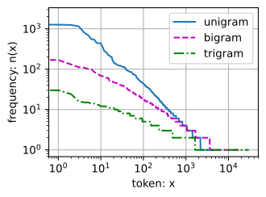

Recurrent Neural Networks
Chapter 9: Introduction
Based on "Dive into Deep Learning" by Zhang et al.
Instructor: Hafsteinn Einarsson
University of Iceland
From Fixed-Length to Sequential Data
What We've Covered So Far
- Linear/Logistic Regression & MLPs: Fixed feature vectors $$\mathbf{x}_i = [x_1, x_2, ..., x_d]$$
- Tabular Data: Arranged in tables with fixed columns
- CNNs for Images: Fixed dimensions (e.g., 28×28 Fashion-MNIST)
The Challenge: What about sequences of images (video) or generating sequential outputs (image captioning)?
Sequential Learning Tasks
Tasks Requiring Sequential Outputs
- Image captioning
- Speech synthesis
- Music generation
Tasks Learning from Sequential Inputs
- Time series prediction
- Video analysis
- Musical information retrieval
Tasks with Both Sequential Input and Output
- Machine translation
- Dialogue systems
- Robot control
Test Your Understanding
Recurrent Neural Networks
RNNs are deep learning models that capture the dynamics of sequences via recurrent connectionsConnections that can be thought of as cycles in the network of nodes.
Key Characteristics
- Unrolled across time steps with the same parameters at each step
- Standard connections: Applied synchronously within the same time step
- Recurrent connections: Dynamic, passing information across adjacent time steps
RNNs can be thought of as feedforward networks where parameters are shared across time steps
Unfolding Through Time
Figure 9.1: RNN Unfolding

Left: Recurrent connections depicted as cyclic edges
Right: RNN unfolded over time steps
- Recurrent edges span adjacent time steps
- Conventional connections computed synchronously
RNN History and Applications
Origins
RNNs originated as models of the brain in cognitive science, later adopted by machine learning
Rise to Prominence in the 2010s
- Handwriting recognition (Graves et al., 2008)
- Machine translation (Sutskever et al., 2014)
- Medical diagnoses (Lipton et al., 2016)
Current Status
While RNNs have ceded market share to Transformers, they remain staple models for sequential modeling
Test Your Understanding
The Key Insight
While inputs and targets for many tasks cannot be represented as fixed-length vectors, they can be represented as varying-length sequences of fixed-length vectors
Examples
- Documents: Sequences of words
- Medical records: Sequences of events (encounters, medications, procedures, lab tests, diagnoses)
- Videos: Varying-length sequences of still images
This representation enables RNNs to handle diverse sequential data types
Sequentiality Beyond RNNs
Sequentiality is not unique to RNNs:
- CNNs can be adapted for varying length data (e.g., images of varying resolution)
- Transformer models (covered in chapter 11) have gained significant market share
However, RNNs rose to prominence as the default models for handling complex sequential structure in deep learning
This chapter is as much about the ABCs of sequence modeling as it is about RNNs
Test Your Understanding
Focus on Natural Language Processing
While sequence models appear in numerous applications, basic research has been driven predominantly by advances in natural language processing
Chapter Approach
- Focus exposition and examples on text data
- Principles apply to other data modalities
- Master text examples → Apply to other domains
If you understand the text examples, applying models to other data should be relatively straightforward
Chapter Roadmap
What's Coming Next
- Basic notation for sequences
- Evaluation measures for sequentially structured outputs
- Language models and their basic concepts
- First RNN models motivated by language modeling
- Gradient calculation through backpropagation in RNNs
- Training challenges and their solutions
- Modern RNN architectures (Chapter 10)
Test Your Understanding
Working with Sequences
From Single Vectors to Sequences
Previously: Single feature vector $$\mathbf{x} \in \mathbb{R}^d$$
Now: Ordered list of feature vectors $$\mathbf{x}_1, \dots, \mathbf{x}_T$$
Each feature vector $\mathbf{x}_t$ is indexed by time stepA discrete point in the sequence, denoted as t ∈ ℤ⁺ $t \in \mathbb{Z}^+$ and lies in $\mathbb{R}^d$
Key change: Focus shifts from individual inputs to sequences of inputs
Types of Sequential Datasets
Single Massive Sequences
Example: Long streams of sensor readings for climate science
Approach: Randomly sample subsequences of predetermined length
Collections of Sequences
- Documents: Each with its own sequence of words, length $T_i$
- Patient records: Hospital stays with varying numbers of events
Sequences can have different lengths within the same dataset
Dependencies in Sequences
Not Independent!
While entire sequences are sampled independently, elements within a sequence are not independent
Examples of Dependencies
- Words later in a document depend on earlier words
- Day 10 medication depends on days 1-9 of hospital stay
- Customer preferences evolve through interactions
Why Model as Sequences?
Auto-fill features work because we can predict continuations better than random
Test Your Understanding
Types of Sequence Prediction Tasks
1. Fixed Input → Fixed Output
Traditional ML (not sequence modeling)
2. Sequential Input → Fixed Output
Example: Sentiment classification from movie review
3. Fixed Input → Sequential Output
Example: Image captioning
4. Sequential Input → Sequential Output
Examples: Machine translation, video captioning
Sequence-to-Sequence Task Types
Aligned Sequences
Input at each time step aligns with corresponding target
Example: Part-of-speech tagging
Input: The cat sat on the mat Output: DET NOUN VERB PREP DET NOUN
Unaligned Sequences
No step-for-step correspondence between input and target
Example: Machine translation
Input: How are you doing? Output: Hvað er að frétta af þér?
Unsupervised Sequence Modeling
The Most Straightforward Problem
Before handling targets, we start with density modelingEstimating the probability distribution of sequences without labels
Goal
Estimate the probability mass function:
$$p(\mathbf{x}_1, \ldots, \mathbf{x}_T)$$
This tells us how likely we are to see any given sequence
Also called sequence modeling or language modeling (for text)
Test Your Understanding
Autoregressive Models
Example: Stock Market Prediction

FTSE 100 index over about 30 years
A trader wants to predict the next price based on history
The Autoregressive Problem
Goal: Estimate the Distribution
$$P(x_t \mid x_{t-1}, \ldots, x_1)$$
Probability of next value given all previous values
Or at least key statistics:
$$\mathbb{E}[(x_t \mid x_{t-1}, \ldots, x_1)]$$
Expected value of next observation
AutoregressiveModels that regress a signal on its own previous values: Predicting future values from past values of the same signal
Connection to Unsupervised Sequence Modeling
Recall: Unsupervised Sequence Modeling
We want to estimate the probability mass function:
Chain Rule Decomposition
Using the chain rule of probability:
Key Insight: Autoregressive modeling solves each factor $p(x_t \mid x_{t-1}, \ldots, x_1)$ in this decomposition!
Once we can predict each next token, we can model entire sequences
The Variable-Length Challenge
The Problem
Number of inputs $x_{t-1}, \ldots, x_1$ varies with $t$
- At $t=2$: Only 1 input ($x_1$)
- At $t=100$: 99 inputs ($x_1, \ldots, x_{99}$)
- At $t=1000$: 999 inputs!
Why is this problematic?
Neural networks require fixed-size inputs
Two Key Strategies
Strategy 1: Fixed Window (τ-order Markov)
Only use last $\tau$ observations: $x_{t-1}, \ldots, x_{t-\tau}$
- ✓ Fixed input size
- ✓ Works with standard neural networks
- ✗ Ignores older history
Strategy 2: Latent Autoregressive Models
Maintain summary $h_t$ of past observations
- $\hat{x}_t = P(x_t \mid h_t)$
- $h_t = g(h_{t-1}, x_{t-1})$
Stationarity Assumption
What is StationarityThe assumption that the dynamics generating the data don't change over time?
The dynamics of sequence generation don't change over time
While specific values $x_t$ change, the process generating them remains constant
Training Data Construction
Create examples by sampling windows randomly from historical data
Allows us to use past data to learn patterns for future prediction
Test Your Understanding
Sequence Models & Language Models
Goal: Estimate Joint Probability
$$p(x_1, \ldots, x_T)$$
How likely is this entire sequence?
Common with Discrete Tokens
Especially important for words in natural language
Terminology
- Sequence models: General term
- Language models: When applied to text
- Often used interchangeably due to NLP dominance
Why Language Models Matter
1. Evaluate Likelihood
Compare naturalness of candidate outputs
- Machine translation: Which translation is more natural?
- Speech recognition: Which transcription is more likely?
2. Sample Sequences
Generate new text that follows learned patterns
3. Optimize Sequences
Find the most likely sequence given constraints
From Joint to Conditional Probabilities
The Chain Rule of Probability
$$P(x_1, \ldots, x_T) = P(x_1) \prod_{t=2}^T P(x_t \mid x_{t-1}, \ldots, x_1)$$
What this means:
- $P(x_1)$: Probability of first element
- $P(x_2 \mid x_1)$: Probability of second given first
- $P(x_3 \mid x_2, x_1)$: Probability of third given first two
- ... and so on
Language modeling is autoregressive prediction!
Output for Discrete Sequences
For Words/Discrete Tokens
Model must output full probability distribution over vocabulary
Example: Next Word Prediction
Given: "The cat sat on the..."
Output probabilities: "mat": 0.35 "floor": 0.25 "table": 0.15 "chair": 0.10 ... ...
Model acts as a probabilistic classifier at each step
Test Your Understanding
Markov Models
The Markov ConditionThe future is conditionally independent of the past, given the recent history
Only condition on $\tau$ previous time steps
$x_{t-1}, \ldots, x_{t-\tau}$ instead of $x_{t-1}, \ldots, x_1$
Key Assumption
The future is conditionally independent of the distant past, given recent history
Assumption: Throwing away history beyond $\tau$ steps causes no loss in predictive power
Orders of Markov Models
First-Order Markov ($\tau = 1$)
$P(x_1, \ldots, x_T) = P(x_1) \prod_{t=2}^T P(x_t \mid x_{t-1})$
Only depends on immediate previous state
k-th Order Markov ($\tau = k$)
Depends on previous $k$ states
Example (2nd order): $P(x_t \mid x_{t-1}, x_{t-2})$
Trade-off
- Higher $k$: More context, better accuracy
- Lower $k$: Less computation, easier to train
Markov Models in Practice
Often Approximately True
Real text gains information from more context, but gains diminish rapidly
Computational Benefits
- Fixed input size for neural networks
- Reduced memory requirements
- Faster training and inference
Modern Models
Even massive RNN and Transformer models seldom use more than thousands of words of context
Discrete Markov Models: Counting Approach
Simple Counting Approach
For discrete data (like words), we can estimate probabilities directly:
- Count occurrences of each word in each context
- Compute relative frequencies
- Use as estimate of $P(x_t \mid x_{t-1})$
Example: First-Order Model
If "the" appears 1000 times and "the cat" appears 50 times, then $P(\text{cat} \mid \text{the}) = 0.05$
Challenges
- Sparsity: Many word combinations never seen in training
- Storage: Need to store counts for all possible contexts
- Smoothing: Handle zero counts with techniques like Laplace smoothingA technique that adds a small constant (usually 1) to all counts to avoid zero probabilities. For example, if "the cat" never appears, instead of P=0/1000=0, we get P=(0+1)/(1000+V) where V is vocabulary size
From Counting to Optimal Sequences
Beyond Just Counting: Finding the Best Sequence
Discrete Markov models don't just estimate probabilities - they help us find optimal sequences
The Sequence Modeling Challenge
- Given: A sequence of observations (words, sounds, etc.)
- Find: The most likely underlying sequence of states
- Example: Speech recognition - audio → words
- Example: Part-of-speech tagging - words → grammatical tags
The Computational Problem
With $|S|$ possible states and $T$ time steps, there are $|S|^T$ possible sequences!
We need a smarter approach than checking every possibility...
Dynamic Programming for Sequence Decoding
Dynamic ProgrammingAn optimization technique that breaks problems into overlapping subproblems
Find the most likely sequence efficiently using the Viterbi algorithm
Key Insight: Optimal Substructure
The optimal path to state $s_t$ only depends on optimal paths to states at $s_{t-1}$
Complexity Reduction
- Brute force: $O(|S|^T)$ - exponential in sequence length
- Viterbi: $O(T \cdot |S|^2)$ - linear in sequence length
- Example: For 10 states, 100 time steps: $10^{100}$ vs $10^5$ operations!
This principle extends to modern neural sequence models - we can decode efficiently even with complex probability distributions
Test Your Understanding
The Order of Decoding
Left-to-Right Factorization
$$P(x_1, \ldots, x_T) = P(x_1) \prod_{t=2}^T P(x_t \mid x_{t-1}, \ldots, x_1)$$
Right-to-Left Factorization (Also Valid!)
$$P(x_1, \ldots, x_T) = P(x_T) \prod_{t=T-1}^1 P(x_t \mid x_{t+1}, \ldots, x_T)$$
Both are mathematically valid factorizations
So why do we prefer left-to-right?
Why Left-to-Right? Reason 1
Natural Human Intuition
We read text left-to-right (in most languages)
We naturally predict what comes next, not what came before
Example
"The weather today is..."
Easy to predict: → "sunny", "cloudy", "rainy"
Harder to predict: "??? ??? ??? is beautiful" ←
We have better intuitions for forward prediction
Why Left-to-Right? Reason 2
Extensibility to Arbitrary Lengths
Can extend sequences naturally:
$$P(x_{t+1}, x_t, \ldots, x_1) = P(x_t, \ldots, x_1) \cdot P(x_{t+1} \mid x_t, \ldots, x_1)$$
Just multiply by one more conditional probability!
Practical Benefit
Same model handles sequences of any length
Can generate text of arbitrary length
Why Left-to-Right? Reason 3
Causal Structure
Future events cannot influence the past
If we change $x_t$:
- ✓ Can affect $x_{t+1}, x_{t+2}, ...$ (future)
- ✗ Cannot affect $x_{t-1}, x_{t-2}, ...$ (past)
Mathematical Consequence
Sometimes: $x_{t+1} = f(x_t) + \epsilon$ (additive noise)
But the reverse is often not true!
Forward prediction aligns with causality
Test Your Understanding
Training: Synthetic Data Example
Before Text: Continuous-Valued Data
Let's start with a simple synthetic example
Data Generation
T = 1000 # Total time steps
time = torch.arange(1, T + 1, dtype=torch.float32)
x = torch.sin(0.01 * time) + torch.randn(T) * 0.2Sine wave with additive noise
Creating Training Examples
τ-th Order Markov Assumption
Use past $\tau$ observations to predict next value
Example with τ = 4
- Features: $\mathbf{x}_t = [x_{t-4}, x_{t-3}, x_{t-2}, x_{t-1}]$
- Label: $y = x_t$
Dataset Size
With $T = 1000$ and $\tau = 4$:
We get $1000 - 4 = 996$ examples
(Can't predict $y_1, y_2, y_3, y_4$ without history)
Data Preparation Code
Creating Features and Labels
class Data(d2l.DataModule):
def __init__(self, batch_size=16, T=1000,
num_train=600, tau=4):
self.save_hyperparameters()
self.time = torch.arange(1, T + 1, dtype=torch.float32)
self.x = torch.sin(0.01 * self.time) + \
torch.randn(T) * 0.2
def get_dataloader(self, train):
# Create sliding windows
features = [self.x[i : self.T-self.tau+i]
for i in range(self.tau)]
self.features = torch.stack(features, 1)
self.labels = self.x[self.tau:].reshape((-1, 1))
# Split train/test
i = slice(0, self.num_train) if train else \
slice(self.num_train, None)
return self.get_tensorloader([self.features,
self.labels], train, i)Training a Linear Model
Simple Linear Regression
model = d2l.LinearRegression(lr=0.01)
trainer = d2l.Trainer(max_epochs=5)
trainer.fit(model, data)What the Model Learns
Linear combination of past τ values:
$$\hat{x}_t = w_1 x_{t-4} + w_2 x_{t-3} + w_3 x_{t-2} + w_4 x_{t-1} + b$$
Model learns weights that best predict next value
Test Your Understanding
One-Step-Ahead Prediction
Evaluating the Model
onestep_preds = model(data.features).detach().numpy()
d2l.plot(data.time[data.tau:],
[data.labels, onestep_preds],
'time', 'x',
legend=['labels', '1-step preds'])Predictions look good, even at t=1000!
Multi-Step Prediction Challenge
The Problem
What if we only observed up to time 604?
Want to predict time 609 (5 steps ahead)
We Don't Have the Inputs!
To predict $\hat{x}_{609}$, we need $x_{605}, x_{606}, x_{607}, x_{608}$
But we haven't observed these yet!
Solution: Use Our Own Predictions
Feed predictions back as inputs
k-Step-Ahead Prediction
The Recursive Process
$$\begin{aligned} \hat{x}_{605} &= f(x_{601}, x_{602}, x_{603}, x_{604}) \\ \hat{x}_{606} &= f(x_{602}, x_{603}, x_{604}, \color{#FC8484}{\hat{x}_{605}}) \\ \hat{x}_{607} &= f(x_{603}, x_{604}, \color{#FC8484}{\hat{x}_{605}, \hat{x}_{606}}) \\ \hat{x}_{608} &= f(x_{604}, \color{#FC8484}{\hat{x}_{605}, \hat{x}_{606}, \hat{x}_{607}}) \\ \hat{x}_{609} &= f(\color{#FC8484}{\hat{x}_{605}, \hat{x}_{606}, \hat{x}_{607}, \hat{x}_{608}}) \end{aligned}$$
Red = predicted values used as input
Each prediction depends on previous predictions!
Multi-Step Prediction Results
Implementation
multistep_preds = torch.zeros(data.T)
multistep_preds[:] = data.x
for i in range(data.num_train + data.tau, data.T):
multistep_preds[i] = model(
multistep_preds[i - data.tau:i].reshape((1, -1)))Predictions decay to a constant quickly!
Error Accumulation
Why Performance Degrades
Errors compound at each step:
- Step 1: Error $\epsilon_1 = \bar{\epsilon}$
- Step 2: Error $\epsilon_2 = \bar{\epsilon} + c\epsilon_1$
- Step 3: Error $\epsilon_3 = \bar{\epsilon} + c\epsilon_2$
- ...
Real-World Example
Weather forecasts:
- 24 hours: Pretty accurate ✓
- 7 days: Much less accurate ✗
k-Step Predictions Comparison
Comparing Different k Values
Quality degrades as k increases:
- 1-step: Excellent
- 4-step: Still good
- 16-step: Getting worse
- 64-step: Almost useless
Test Your Understanding
Chapter 9.1 Summary
Key Concepts
- Sequences: Ordered lists of feature vectors
- Autoregressive models: Predict from past values
- Language models: Estimate sequence probabilities
- Markov assumption: Limited context window
Major Challenges
- Variable-length inputs
- Error accumulation in multi-step prediction
- Interpolation vs extrapolation
Important Insights
- Respect temporal order in training
- Never train on future data
- Prediction quality degrades with horizon
Test Your Understanding
Converting Raw Text into Sequence Data
The Text Processing Pipeline
Transforming raw text into model-ready sequences
Read raw text as strings into memory
Split strings into tokens (words/characters)
Map tokens to numerical indices
Transform text into numerical sequences
Test Your Understanding
Reading the Dataset
The Time Machine Dataset
H.G. Wells' classic novel (~30,000 words)
Implementation: TimeMachine Class
class TimeMachine(d2l.DataModule):
"""The Time Machine dataset."""
def _download(self):
fname = d2l.download(d2l.DATA_URL + 'timemachine.txt', self.root,
'090b5e7e70c295757f55df93cb0a180b9691891a')
with open(fname) as f:
return f.read()
data = TimeMachine()
raw_text = data._download()
raw_text[:60]
# Output: 'The Time Machine, by H. G. Wells [1898]\n\n\n\n\nI\n\n\nThe Time Tra'Text Preprocessing
Cleaning the Raw Text
Remove punctuation and convert to lowercase
@d2l.add_to_class(TimeMachine)
def _preprocess(self, text):
return re.sub('[^A-Za-z]+', ' ', text).lower()
text = data._preprocess(raw_text)
text[:60]
# Output: 'the time machine by h g wells i the time traveller for so it'Regex Pattern: [^A-Za-z]+
Replaces all non-alphabetic characters with spaces
Interactive Text Preprocessing Demo
Original:
Preprocessed:
Test Your Understanding
Tokenization
What are TokensThe atomic (indivisible) units of text that serve as input to models?
Atomic units of text - the building blocks for sequences
Example Sentence
"Baby needs a new pair of shoes"
Word Tokens (7 tokens)
["Baby", "needs", "a", "new", "pair", "of", "shoes"]
Large vocabulary (10K-100K+ words)
Character Tokens (30 tokens)
['B','a','b','y',' ','n','e','e','d','s',...]
Small vocabulary (256 ASCII chars)
Character-Level Tokenization
Implementation
@d2l.add_to_class(TimeMachine)
def _tokenize(self, text):
return list(text)
tokens = data._tokenize(text)
','.join(tokens[:30])
# Output: 't,h,e, ,t,i,m,e, ,m,a,c,h,i,n,e, ,b,y, ,h, ,g, ,w,e,l,l,s, 'Trade-offs
✓ Advantages
- Small vocabulary size
- No unknown tokens
- Can handle any text
✗ Disadvantages
- Longer sequences
- Harder to capture word meaning
- More computation needed
Interactive Tokenization Comparison
Character Tokens
Word Tokens
Test Your Understanding
Building Vocabulary
The Vocab Class
Mapping tokens to numerical indices
Key Components
- Token Frequencies: Count occurrences of each token
- Index Mapping: Assign unique indices to tokens
- Unknown Token: Special
<unk>for unseen tokens - Reserved Tokens: Special tokens for specific purposes
Why numerical indices? Neural networks require numerical input!
Vocabulary Implementation
class Vocab:
"""Vocabulary for text."""
def __init__(self, tokens=[], min_freq=0, reserved_tokens=[]):
# Flatten a 2D list if needed
if tokens and isinstance(tokens[0], list):
tokens = [token for line in tokens for token in line]
# Count token frequencies
counter = collections.Counter(tokens)
self.token_freqs = sorted(counter.items(), key=lambda x: x[1], reverse=True)
# The list of unique tokens
self.idx_to_token = list(sorted(set([''] + reserved_tokens + [
token for token, freq in self.token_freqs if freq >= min_freq])))
self.token_to_idx = {token: idx
for idx, token in enumerate(self.idx_to_token)}
def __len__(self):
return len(self.idx_to_token)
def __getitem__(self, tokens):
if not isinstance(tokens, (list, tuple)):
return self.token_to_idx.get(tokens, self.unk)
return [self.__getitem__(token) for token in tokens]
def to_tokens(self, indices):
if hasattr(indices, '__len__') and len(indices) > 1:
return [self.idx_to_token[int(index)] for index in indices]
return self.idx_to_token[indices]
@property
def unk(self): # Index for the unknown token
return self.token_to_idx[''] Using the Vocabulary
Example: Token to Index Conversion
vocab = Vocab(tokens)
indices = vocab[tokens[:10]]
print('indices:', indices)
print('words:', vocab.to_tokens(indices))
# Output:
# indices: [21, 9, 6, 0, 21, 10, 14, 6, 0, 14]
# words: ['t', 'h', 'e', ' ', 't', 'i', 'm', 'e', ' ', 'm']Key Features
- Frequency Filtering:
min_freqparameter removes rare tokens - Bidirectional Mapping: Token ↔ Index conversion
- Unknown Handling: Unseen tokens →
<unk>index - Sorted Storage: Tokens sorted by frequency for efficiency
Interactive Vocabulary Builder
Token Frequencies
Token → Index Mapping
Test Your Understanding
Exploratory Language Statistics
Word Frequency Analysis
Top 10 most frequent words in The Time Machine
words = text.split()
vocab = Vocab(words)
vocab.token_freqs[:10]
# Output:
[('the', 2261), ('i', 1267), ('and', 1245), ('of', 1155), ('a', 816),
('to', 695), ('was', 552), ('in', 541), ('that', 443), ('my', 440)]Observation: Stop WordsCommon words that serve syntactic roles but carry little semantic meaning (the, a, in, to, etc.)
Most frequent words are articles, pronouns, and prepositions
- Not particularly descriptive
- Common across all texts
- Important for grammar but not unique content
Zipf's Law
Zipf's LawA power law stating that the frequency of a word is inversely proportional to its rank in the frequency table
The frequency of the i-th most frequent word:
$$n_i \propto \frac{1}{i^\alpha}$$
where α is the exponent characterizing the distribution
Log-Log Representation
$$\log n_i = -\alpha \log i + c$$
Forms a straight line on log-log plot
Visualizing Zipf's Law
Word Frequency Distribution
Key observations:
- Frequency decays quickly: 10th word is <1/5 as common as the 1st
- Power law distribution holds across the range
- Few very common words, many rare words
- Straight line on log-log plot confirms Zipf's Law
Test Your Understanding
N-gram Analysis
Beyond Single Words: N-gramsContiguous sequences of n items (words or characters) from a text
Unigrams
Single words
["the", "cat", "sat"]
Bigrams
Two consecutive words
["the cat", "cat sat"]
Trigrams
Three consecutive words
["the cat sat"]
N-grams capture local context and word relationships
Bigram Frequencies
Top 10 Bigrams
bigram_tokens = ['--'.join(pair) for pair in zip(words[:-1], words[1:])]
bigram_vocab = Vocab(bigram_tokens)
bigram_vocab.token_freqs[:10]
# Output:
[('of--the', 309), ('in--the', 169), ('i--had', 130), ('i--was', 112),
('and--the', 109), ('the--time', 102), ('it--was', 99), ('to--the', 85),
('as--i', 78), ('of--a', 73)]Observation
9 out of 10 most frequent bigrams contain only stop words!
Only "the--time" is specific to the book's content
Trigram Frequencies
Top 10 Trigrams
trigram_tokens = ['--'.join(triple) for triple in zip(
words[:-2], words[1:-1], words[2:])]
trigram_vocab = Vocab(trigram_tokens)
trigram_vocab.token_freqs[:10]
# Output:
[('the--time--traveller', 59), ('the--time--machine', 30),
('the--medical--man', 24), ('it--seemed--to', 16), ('it--was--a', 15),
('here--and--there', 15), ('seemed--to--me', 14), ('i--did--not', 14),
('i--saw--the', 13), ('i--began--to', 13)]Better Content Capture
Trigrams reveal more book-specific content:
- "the time traveller" - main character
- "the time machine" - central object
- "the medical man" - supporting character
Comparing N-gram Distributions
Frequency Distributions Follow Zipf's Law
Key insights:
- All n-grams follow Zipf's law (power law distribution)
- Smaller α (flatter slope) for longer n-grams
- Number of distinct n-grams is limited
- Many n-grams occur very rarely
Interactive N-gram Generator
Generated N-grams
Test Your Understanding
Putting It All Together
Complete Text Processing Pipeline
The build method combines all components
@d2l.add_to_class(TimeMachine)
def build(self, raw_text, vocab=None):
tokens = self._tokenize(self._preprocess(raw_text))
if vocab is None:
vocab = Vocab(tokens)
corpus = [vocab[token] for token in tokens]
return corpus, vocab
corpus, vocab = data.build(raw_text)
len(corpus), len(vocab)
# Output: (170580, 28)Pipeline Flow
- Preprocess: Clean and normalize text
- Tokenize: Split into character tokens
- Build Vocab: Create token-to-index mapping
- Convert: Transform tokens to indices
Key Implementation Details
Design Choices
- Character-level tokenization: Simplifies training
- Single list corpus: Not split by sentences/paragraphs
- Vocabulary size: 28 unique characters (26 letters + space + <unk>)
- Corpus length: 170,580 character tokens
Result: A sequence of 170,580 numerical indices representing the entire book
Ready for Model Input
The corpus can now be:
- Split into training/validation sets
- Batched for efficient processing
- Fed into neural network models
Test Your Understanding
Chapter 9.2 Summary
Key Takeaways
Text Processing Pipeline
- Load → Tokenize → Build Vocabulary → Convert to Indices
- Characters vs words as tokens: trade-offs in vocabulary size and sequence length
- Unknown tokens handled with special <unk> symbol
Language Statistics
- Word frequencies follow Zipf's Law: $$n_i \propto \frac{1}{i^\alpha}$$
- Stop words dominate frequency lists
- N-grams also follow power law distributions
- Longer n-grams capture more content-specific patterns
Understanding text statistics is crucial for effective NLP model design
Test your understanding
Language Models
Estimating the joint probability of text sequences
Goal: Model the probability of observing a sequence of tokens
$$P(x_1, x_2, \ldots, x_T)$$
Essential for:
- Text generation
- Speech recognition
- Machine translation
- Text completion
Joint Probability Decomposition
Using the chain rule of probability:
Example with four words:
Applications of Language Models
Speech Recognition
Disambiguate similar-sounding phrases:
- "to recognize speech" ✓
- "to wreck a nice beach" ✗
Text Generation
Generate coherent text by sampling:
$$x_t \sim P(x_t \mid x_{t-1}, \ldots, x_1)$$
Language models help distinguish between grammatically correct but semantically unlikely sequences
Challenge: Conditional Complexity
The conditional probability becomes increasingly complex:
Problems with long contexts:
- Exponentially growing parameter space
- Sparse data for long sequences
- Computational complexity
Solution: Markov assumptionsAssumption that the future depends only on a limited history, not the entire past
Test Your Understanding
Markov Models and N-grams
Simplifying assumptions for tractable language modeling
Markov PropertyThe future depends only on the current state, not the entire history: Limited context dependency
Different approximation orders:
- Unigram: No dependencies
- Bigram: Depends on previous word
- Trigram: Depends on two previous words
- N-gram: Depends on n-1 previous words
N-gram Model Formulations
Different orders of approximation:
Unigram (Independence):
$$P(x_1, x_2, x_3, x_4) = P(x_1) P(x_2) P(x_3) P(x_4)$$Bigram (First-order Markov):
$$P(x_1, x_2, x_3, x_4) = P(x_1) P(x_2 \mid x_1) P(x_3 \mid x_2) P(x_4 \mid x_3)$$Trigram (Second-order Markov):
$$P(x_1, x_2, x_3, x_4) = P(x_1) P(x_2 \mid x_1) P(x_3 \mid x_1, x_2) P(x_4 \mid x_2, x_3)$$Interactive N-gram Generator
Explore how different n-gram models capture text patterns
N-grams Generated:
Frequency Count:
Trade-offs in N-gram Models
Lower-order (Unigram, Bigram)
- ✓ More training data per pattern
- ✓ Better generalization
- ✗ Less context awareness
- ✗ Poor long-range dependencies
Higher-order (Trigram+)
- ✓ Captures more context
- ✓ Better local coherence
- ✗ Data sparsity issues
- ✗ Exponentially more parameters
Test Your Understanding
Word Frequency Estimation
Computing language model parameters from data
Estimate conditional probability:
$$\hat{P}(\text{learning} \mid \text{deep}) = \frac{n(\text{deep, learning})}{n(\text{deep})}$$Where:
- $n(x)$ = count of word $x$
- $n(x, x')$ = count of word pair $(x, x')$
The Sparsity Problem
Challenges with frequency-based estimation:
As n-gram order increases, most combinations never appear in training data
Unigram
10K
unique patterns
Bigram
100M
possible patterns
Trigram
1T
possible patterns
Most trigrams will have zero counts!
Interactive Frequency Counter
Observe how word frequency changes with context
Unigram Counts
Bigram Counts
Statistics
Total words: 0
Unique unigrams: 0
Unique bigrams: 0
Sparsity ratio: 0%
Zero Probability Problem
What happens with unseen n-grams?
If $n(\text{word}_1, \text{word}_2) = 0$:
$$P(\text{word}_2 \mid \text{word}_1) = \frac{0}{n(\text{word}_1)} = 0$$⚠️ Zero probability for any word makes the entire sequence probability zero!
This leads to:
- Unable to handle novel but valid phrases
- Poor generalization to new text
- Need for smoothing techniques
Test Your Understanding
Laplace Smoothing
Addressing the zero probability problem
Laplace SmoothingAdd a small constant to all counts to avoid zero probabilities: Add pseudocounts to prevent zeros
Key idea: Pretend we saw every possible n-gram at least $\epsilon$ times
Smoothing Formulas
Adding pseudocounts at different levels:
Unigram smoothing:
$$\hat{P}(x) = \frac{n(x) + \epsilon_1/m}{n + \epsilon_1}$$Bigram smoothing:
$$\hat{P}(x' \mid x) = \frac{n(x, x') + \epsilon_2 \hat{P}(x')}{n(x) + \epsilon_2}$$Trigram smoothing:
$$\hat{P}(x'' \mid x,x') = \frac{n(x, x',x'') + \epsilon_3 \hat{P}(x'')}{n(x, x') + \epsilon_3}$$Where: $n$ = total words, $m$ = vocabulary size
Interactive Smoothing Demo
See how smoothing parameters affect probability estimates
Unsmoothed Probability
Seen word (n=10):
0.100
Unseen word (n=0):
0.000
Smoothed Probability
Seen word (n=10):
0.099
Unseen word (n=0):
0.001
Limitations of Laplace Smoothing
Why we need better approaches:
Problems
- Assigns too much probability to unseen events
- Doesn't consider word similarity
- Ignores semantic relationships
- Still requires storing all counts
Neural Solutions
- Learn distributed representations
- Share parameters across similar contexts
- Capture semantic similarities
- Generalize to novel combinations
This motivates using neural networks for language modeling!
Test Your Understanding
Perplexity
Measuring language model quality
PerplexityExponential of the average cross-entropy loss; measures how surprised the model is by the test data: How well can the model predict the next token?
Consider these continuations of "It is raining":
- ✓ "It is raining outside"
- ? "It is raining banana tree"
- ✗ "It is raining piouw;kcj pwepoiut"
Mathematical Definition
From cross-entropy to perplexity:
Average cross-entropy loss:
$$\mathcal{L} = \frac{1}{n} \sum_{t=1}^n -\log P(x_t \mid x_{t-1}, \ldots, x_1)$$Perplexity:
$$\text{PPL} = \exp\left(-\frac{1}{n} \sum_{t=1}^n \log P(x_t \mid x_{t-1}, \ldots, x_1)\right)$$Or simply: $\text{PPL} = \exp(\mathcal{L})$
Interpreting Perplexity
Perplexity as the effective number of choices:
Best Case
PPL = 1
Perfect prediction
P(correct) = 1.0
Baseline
PPL = |V|
Uniform distribution
Random guessing
Worst Case
PPL = ∞
Always wrong
P(correct) = 0
Lower perplexity = Better model
Interactive Perplexity Calculator
See how prediction accuracy affects perplexity
Cross-Entropy Loss
Individual losses:
Average: 2.30
Perplexity
10.0
Effective choices per position
Perplexity in Practice
Typical perplexity values for different models:
Key insights:
- Perplexity is comparable across different text lengths
- Lower values indicate better compression and prediction
- Domain-specific models achieve lower perplexity on their domain
Test Your Understanding
Partitioning Sequences
Preparing data for language model training
Goal: Create overlapping subsequences of fixed length for efficient training
Key concepts:
- Fixed sequence length $n$
- Random offset $d \in [0, n)$ for each epoch
- Target is input shifted by one token
Partitioning Mathematics
Given corpus of length $T$ and subsequence length $n$:
1. Random offset: $d \sim \text{Uniform}(0, n-1)$
2. Number of subsequences: $m = \lfloor (T-d)/n \rfloor$
3. Subsequences: $\mathbf{x}_d, \mathbf{x}_{d+n}, \ldots, \mathbf{x}_{d+n(m-1)}$
Where each subsequence:
Input-target pairs:
Input: $\mathbf{x}_t = [x_t, \ldots, x_{t+n-1}]$
Target: $\mathbf{x}_{t+1} = [x_{t+1}, \ldots, x_{t+n}]$
Visualization of Sequence Partitioning
Example with sequence length n=5 and offset d=2
Each input sequence predicts the next token at each position
Interactive Sequence Partitioner
Explore how sequences are partitioned for training
Generated Sequences:
Input Sequences:
Target Sequences:
Number of sequences: 0
Data Loading Code
Implementation for creating minibatches:
def __init__(self, batch_size, num_steps):
corpus, self.vocab = self.build(self._download())
# Create all possible subsequences
array = torch.tensor([corpus[i:i+num_steps+1]
for i in range(len(corpus)-num_steps)])
# Split into input and target
self.X, self.Y = array[:,:-1], array[:,1:]
def get_dataloader(self, train):
# Random sampling of subsequences
idx = slice(0, self.num_train) if train else
slice(self.num_train, self.num_train + self.num_val)
return self.get_tensorloader([self.X, self.Y], train, idx)Key: Target is input shifted by one position!
Example Output
Sample minibatch with batch_size=2, num_steps=10:
# Input sequences (X)
tensor([[10, 4, 2, 21, 10, 16, 15, 0, 20, 2],
[21, 9, 6, 19, 0, 24, 2, 26, 0, 16]])
# Target sequences (Y) - shifted by 1
tensor([[ 4, 2, 21, 10, 16, 15, 0, 20, 2, 10],
[ 9, 6, 19, 0, 24, 2, 26, 0, 16, 9]])Notice: Y[i] = X[i+1] for each position
- This allows predicting the next token at each step
- Efficient use of data: each token is both input and target
Test Your Understanding
Summary: Language Models
Key Takeaways
- Language models estimate joint probability of text sequences
- N-gram models use Markov assumptions to simplify dependencies
- Data sparsity is a fundamental challenge for count-based methods
- Laplace smoothing addresses zero probabilities but has limitations
- Perplexity measures model quality (lower is better)
- Neural models overcome limitations of count-based approaches
Modern large language models scale up with data, model size, and compute to achieve state-of-the-art performance across diverse tasks
Test your understanding
Section 9.4: Recurrent Neural Networks
From n-grams to Neural Networks
Recall: n-gram models suffer from exponential parameter growth
- For vocabulary $|\mathcal{V}|$ and n-grams: $|\mathcal{V}|^n$ parameters
- Example: 10,000 words, 4-grams = $10^{16}$ parameters!
Solution: Use a latent variableA hidden representation that captures the essential information from the observed data model
$$P(x_t \mid x_{t-1}, \ldots, x_1) \approx P(x_t \mid h_{t-1})$$
where $h_{t-1}$ is a hidden stateA vector that stores the sequence information up to the current time step
Hidden State Computation
General Form of Hidden State Update
$$h_t = f(x_t, h_{t-1})$$
The hidden state at time $t$ depends on:
- Current input $x_t$
- Previous hidden state $h_{t-1}$
Key Insight: For a sufficiently powerful function $f$, this is not an approximation—$h_t$ could store all observed data
⚠️ Note: Hidden layers vs. Hidden states
- Hidden layers: Layers between input and output
- Hidden states: Inputs that depend on previous time steps
9.4.1: Neural Networks without Hidden States
Standard MLP Review
Let's first consider an MLP with a single hidden layer:
Hidden Layer:
$$\mathbf{H} = \phi(\mathbf{X} \mathbf{W}_{xh} + \mathbf{b}_h)$$
- $\mathbf{X} \in \mathbb{R}^{n \times d}$: minibatch of $n$ examples, $d$ features
- $\mathbf{W}_{xh} \in \mathbb{R}^{d \times h}$: weight matrix
- $\mathbf{b}_h \in \mathbb{R}^{1 \times h}$: bias
- $\phi$: activation function
Output Layer:
$$\mathbf{O} = \mathbf{H} \mathbf{W}_{hq} + \mathbf{b}_q$$
Matrix Operations Example
Code Demonstration
import torch
# Example dimensions
n, d, h, q = 2, 3, 4, 2 # batch, input, hidden, output
# Random inputs and parameters
X = torch.randn(n, d)
W_xh = torch.randn(d, h)
b_h = torch.randn(1, h)
W_hq = torch.randn(h, q)
b_q = torch.randn(1, q)
# Forward pass
H = torch.tanh(torch.matmul(X, W_xh) + b_h)
O = torch.matmul(H, W_hq) + b_q
print(f"Input shape: {X.shape}")
print(f"Hidden shape: {H.shape}")
print(f"Output shape: {O.shape}")Input shape: torch.Size([2, 3])
Hidden shape: torch.Size([2, 4])
Output shape: torch.Size([2, 2])Test Your Understanding
9.4.2: RNNs with Hidden States
Adding Memory to Neural Networks
RNNs introduce recurrent computationComputation that uses outputs from previous time steps as inputs to the current time step for hidden states:
Hidden State Update:
$$\mathbf{H}_t = \phi(\mathbf{X}_t \mathbf{W}_{xh} + \mathbf{H}_{t-1} \mathbf{W}_{hh} + \mathbf{b}_h)$$
- $\mathbf{X}_t$: Input at time $t$
- $\mathbf{H}_{t-1}$: Hidden state from time $t-1$
- $\mathbf{W}_{hh} \in \mathbb{R}^{h \times h}$: Hidden-to-hidden weights
Output Computation:
$$\mathbf{O}_t = \mathbf{H}_t \mathbf{W}_{hq} + \mathbf{b}_q$$
RNN Computational Graph
Code: Recurrent Computation
# Method 1: Concatenation
def rnn_concat(inputs, state, params):
W_xh, W_hh, b_h, W_hq, b_q = params
H = []
for X in inputs:
# Concatenate input and previous state
combined = torch.cat((X, state), dim=1)
W = torch.cat((W_xh, W_hh), dim=0)
state = torch.tanh(torch.matmul(combined, W) + b_h)
H.append(state)
return H, state
# Method 2: Separate computations
def rnn_separate(inputs, state, params):
W_xh, W_hh, b_h, W_hq, b_q = params
H = []
for X in inputs:
state = torch.tanh(
torch.matmul(X, W_xh) +
torch.matmul(state, W_hh) + b_h
)
H.append(state)
return H, stateTest Your Understanding
9.4.3: Character-Level Language Models
Using RNNs for Text Generation
Character-level models predict the next character based on previous characters
Input: "machin" → Target: "achine"
Training Process:
- Apply softmax at each time step
- Use cross-entropy lossA loss function that measures the difference between predicted and actual probability distributions
- Loss at time $t$ depends on $P(\text{"h"} \mid \text{"m", "a", "c"})$
Interactive Character Prediction
Character-Level RNN Demo
Implementation Details
Practical Considerations
- Each token represented as $d$-dimensional vector
- Batch size $n > 1$ for efficiency
- Input $\mathbf{X}_t$ at time $t$: $n \times d$ matrix
- Output $\mathbf{O}_t$ determines next character probabilities
Key Advantage: Number of parameters doesn't grow with sequence length!
Test Your Understanding
9.4.4: Summary
Key Takeaways
- RNNs use recurrent computation to maintain hidden states
- Hidden states capture historical information from the sequence
- Model parameters remain constant across time steps
- Number of parameters doesn't grow with sequence length
- Can be used for character-level language modeling
RNNs provide a powerful framework for processing sequential data with temporal dependencies
9.5: Implementing RNNs from Scratch
Building an RNN from the Ground Up
We'll implement:
- RNN model architecture with recurrent connections
- One-hot encoding for text input
- Forward propagation through time
- Gradient clipping to prevent exploding gradients
- Character-level language modeling
Understanding the implementation details helps us appreciate both the power and limitations of RNNs
9.5.1: RNN Model Architecture
Mathematical Formulation
Hidden state update:
$$\mathbf{H}_t = \tanh(\mathbf{X}_t \mathbf{W}_{xh} + \mathbf{H}_{t-1} \mathbf{W}_{hh} + \mathbf{b}_h)$$
Output computation:
$$\mathbf{O}_t = \mathbf{H}_t \mathbf{W}_{hq} + \mathbf{b}_q$$
Parameter Dimensions
- $\mathbf{W}_{xh} \in \mathbb{R}^{d \times h}$ - Input to hidden
- $\mathbf{W}_{hh} \in \mathbb{R}^{h \times h}$ - Hidden to hidden
- $\mathbf{W}_{hq} \in \mathbb{R}^{h \times q}$ - Hidden to output
- $\mathbf{b}_h \in \mathbb{R}^{h}$, $\mathbf{b}_q \in \mathbb{R}^{q}$ - Biases
RNN Implementation in PyTorch
class RNNScratch(d2l.Module):
"""The RNN model implemented from scratch."""
def __init__(self, num_inputs, num_hiddens, sigma=0.01):
super().__init__()
self.save_hyperparameters()
self.W_xh = nn.Parameter(
torch.randn(num_inputs, num_hiddens) * sigma)
self.W_hh = nn.Parameter(
torch.randn(num_hiddens, num_hiddens) * sigma)
self.b_h = nn.Parameter(torch.zeros(num_hiddens))
def forward(self, inputs, state=None):
if state is None:
state = torch.zeros((inputs.shape[1], self.num_hiddens),
device=inputs.device)
outputs = []
for X in inputs: # Shape: (num_steps, batch_size, num_inputs)
state = torch.tanh(torch.matmul(X, self.W_xh) +
torch.matmul(state, self.W_hh) + self.b_h)
outputs.append(state)
return outputs, state
Test Your Understanding: RNN Architecture
9.5.2: One-Hot Encoding
Representing Discrete Tokens
One-hot encoding converts tokens to binary vectors:
- Vector length = vocabulary size
- Single 1 at token's index, 0s elsewhere
- Enables mathematical operations on text
Implementation
def one_hot(X, num_classes):
# X shape: (batch_size, num_steps)
# Output shape: (num_steps, batch_size, vocab_size)
return F.one_hot(X.T, num_classes).type(torch.float32)
One-Hot Encoding Interactive Demo
Test Your Understanding: One-Hot Encoding
9.5.3: Parameter Initialization
Initializing RNN Parameters
Weight Initialization Strategy
def init_params(self):
# Input to hidden weights
self.W_xh = nn.Parameter(
torch.randn(num_inputs, num_hiddens) * sigma)
# Hidden to hidden weights
self.W_hh = nn.Parameter(
torch.randn(num_hiddens, num_hiddens) * sigma)
# Hidden to output weights
self.W_hq = nn.Parameter(
torch.randn(num_hiddens, vocab_size) * sigma)
# Biases initialized to zero
self.b_h = nn.Parameter(torch.zeros(num_hiddens))
self.b_q = nn.Parameter(torch.zeros(vocab_size))
Key points:
- Small random weights (scaled by σ = 0.01)
- Prevents saturationWhen activation functions output extreme values, causing gradients to vanish of activation functions
- Zero initialization for biases
Parameter Shapes Visualization
Hover over matrices to see their dimensions and role in the RNN
Test Your Understanding: Parameter Initialization
9.5.4: Forward Pass Implementation
Processing Sequences Step by Step
def forward(self, inputs, state=None):
# inputs shape: (num_steps, batch_size, vocab_size)
if state is None:
# Initialize hidden state with zeros
state = torch.zeros((inputs.shape[1], self.num_hiddens))
outputs = []
for X in inputs: # Iterate through time steps
# Update hidden state
state = torch.tanh(
torch.matmul(X, self.W_xh) + # Input contribution
torch.matmul(state, self.W_hh) + # Previous hidden state
self.b_h # Bias
)
outputs.append(state)
return outputs, state
The same parameters are used at every time step - this is parameter sharing across time
Test Your Understanding: Forward Pass
9.5.5: Gradient Clipping
Preventing Exploding Gradients
RNNs suffer from exploding gradients due to repeated multiplication
Gradient Clipping Formula
$$\mathbf{g} \leftarrow \min\left(1, \frac{\theta}{||\mathbf{g}||}\right) \mathbf{g}$$
where $\theta$ is the clipping threshold
Implementation
def clip_gradients(self, grad_clip_val, model):
params = [p for p in model.parameters() if p.requires_grad]
norm = torch.sqrt(sum(torch.sum((p.grad ** 2)) for p in params))
if norm > grad_clip_val:
for param in params:
param.grad[:] *= grad_clip_val / norm
Gradient Clipping Visualization
Test Your Understanding: Gradient Clipping
9.5.6: Training the Model
RNN Language Model Training
Training Step Implementation
def training_step(self, batch):
# Forward pass
l = self.loss(self(*batch[:-1]), batch[-1])
# Track perplexity
self.plot('ppl', torch.exp(l), train=True)
return l
# Loss function: Cross-entropy
# Metric: Perplexity = exp(loss)
PerplexityA measure of how well a probability model predicts a sample. Lower perplexity means better prediction. measures prediction quality:
$$\text{Perplexity} = \exp\left(\frac{1}{n}\sum_{t=1}^{n} -\log P(x_t | x_{<t})\right)$$
Training Performance
Training Progress on "The Time Machine" Dataset
Initial training run
With gradient clipping
Gradient clipping significantly stabilizes training and improves convergence
Test Your Understanding: Training
9.5.7: Text Generation
Generating Text with the Trained RNN
def predict(self, prefix, num_preds, vocab, device=None):
state, outputs = None, [vocab[prefix[0]]]
for i in range(len(prefix) + num_preds - 1):
X = torch.tensor([[outputs[-1]]], device=device)
embs = self.one_hot(X)
rnn_outputs, state = self.rnn(embs, state)
if i < len(prefix) - 1: # Warm-up period
outputs.append(vocab[prefix[i + 1]])
else: # Generate new characters
Y = self.output_layer(rnn_outputs[-1])
outputs.append(int(Y.argmax(axis=1)))
return ''.join([vocab.idx_to_token[i] for i in outputs])
Generation process:
- Start with a prefix (seed text)
- Warm up the hidden state with the prefix
- Generate one character at a time
- Feed generated character back as input
Interactive Text Generation
Test Your Understanding: Text Generation
Concise Implementation with High-Level APIs
From Scratch to Framework APIs
Our scratch implementation provided insight into RNN mechanics, but production code needs:
- Optimized Performance: Framework implementations are highly optimized
- Reduced Development Time: Pre-built components and functions
- Better Maintainability: Standard APIs and patterns
Key Insight: High-level APIs provide the same functionality with significantly less code and better performance
Framework RNN APIs Overview
PyTorch
import torch.nn as nn
# Simple one-liner RNN creation
rnn = nn.RNN(input_size, hidden_size)TensorFlow/Keras
import tensorflow.keras as keras
# Keras SimpleRNN layer
rnn = keras.layers.SimpleRNN(hidden_size,
return_sequences=True,
return_state=True)MXNet/Gluon
from mxnet.gluon import rnn
# Gluon RNN cell
rnn_layer = rnn.RNN(hidden_size)Note: All frameworks provide similar abstractions with slight API differences
Benefits of High-Level APIs
Scratch Implementation
- ~100 lines of code
- Manual gradient computation
- Custom initialization
- Slower execution
Framework APIs
- ~20 lines of code
- Automatic differentiation
- Built-in initialization
- Optimized CUDA/CPU kernels
Test Your Understanding
Defining RNN Models with High-Level APIs
The RNN Class Structure
class RNN(d2l.Module):
"""The RNN model implemented with high-level APIs."""
def __init__(self, num_inputs, num_hiddens):
super().__init__()
self.save_hyperparameters()
# Single line to create RNN!
self.rnn = nn.RNN(num_inputs, num_hiddens)
def forward(self, inputs, H=None):
return self.rnn(inputs, H)Compare with scratch: ~100 lines reduced to ~10 lines!
Framework-Specific Implementations
class RNN(d2l.Module):
def __init__(self, num_inputs, num_hiddens):
super().__init__()
self.rnn = nn.RNN(num_inputs, num_hiddens)
def forward(self, inputs, H=None):
return self.rnn(inputs, H)Language Model with RNN APIs
RNNLM Class Implementation
class RNNLM(d2l.RNNLMScratch):
"""RNN-based language model with high-level APIs."""
def init_params(self):
# Output layer for vocabulary
self.linear = nn.LazyLinear(self.vocab_size)
def output_layer(self, hiddens):
# Transform hidden states to vocabulary predictions
return self.linear(hiddens).swapaxes(0, 1)Key Components
- Inheritance: Reuses training logic from RNNLMScratchBase class that implements training loop, gradient clipping, and text generation methods
- Output Layer: Linear transformationTransforms hidden state dimensions to vocabulary size for next-token prediction from hidden to vocab size
- Axis Swap: Adjusts tensor dimensions for batch processing
Hidden State Initialization
# Different frameworks handle initialization differently
# PyTorch - Returns tensor directly
H = torch.zeros((num_layers, batch_size, num_hiddens))
# TensorFlow - Handled internally by layer
# Pass None and layer creates initial state
# MXNet - Uses begin_state method
H, = rnn_layer.begin_state(batch_size)Shape: (num_layers, batch_size, num_hiddens)
Test Your Understanding
Training RNNs with Framework APIs
Complete Training Setup
# Load the Time Machine dataset
data = d2l.TimeMachine(batch_size=1024, num_steps=32)
# Create RNN with high-level API
rnn = RNN(num_inputs=len(data.vocab), num_hiddens=32)
# Create language model
model = RNNLM(rnn, vocab_size=len(data.vocab), lr=1)
# Train with high-level trainer
trainer = d2l.Trainer(max_epochs=100,
gradient_clip_val=1,
num_gpus=1)
trainer.fit(model, data)Notice: Same hyperparameters as scratch implementation, but much simpler code!
Before Training: Random Predictions
Untrained Model Output
# Make prediction with untrained model
model.predict('it has', 20, data.vocab)
# Outputs nonsense:
# 'it hasxlxlxlxlxlxlxlxlxlxl' (MXNet)
# 'it hasoadd dd dd dd dd dd ' (PyTorch)
# 'it hasretsnrnrxnrnrgczntgq' (TensorFlow)Random initialization produces random character sequences with no linguistic structure
After Training: Coherent Generation
Trained Model Output
# Generate text with trained model
model.predict('it has', 20, data.vocab, device)
# Produces coherent text:
# 'it has and the time the ti'
# 'it has and the trave the t'
# 'it has and the pas an and 'Test Your Understanding
Performance Analysis: APIs vs Scratch
High-level APIs provide 2-3x speedup with identical model quality
Memory Usage Comparison
Memory Efficiency
- Scratch Implementation:
- Stores intermediate values explicitly
- Python object overhead
- Less efficient gradient storage
- Framework APIs:
- Optimized tensor operations
- Automatic memory pooling
- Efficient gradient accumulationThe process of storing and combining gradients during backpropagation
Code Complexity Metrics
| Metric | Scratch Implementation | High-Level API | Reduction |
|---|---|---|---|
| Lines of Code | ~100 | ~20 | 80% |
| Functions to Implement | 8-10 | 2-3 | 75% |
| Bug-Prone Operations | Many (gradients, init) | Few | 90% |
| Development Time | Hours | Minutes | 95% |
Conclusion: Use framework APIs for production; implement from scratch for learning
When to Use Each Approach
Use Scratch Implementation
- Learning RNN internals
- Research on new architectures
- Custom modifications needed
- Debugging understanding
Use Framework APIs
- Production deployments
- Standard architectures
- Performance critical
- Rapid prototyping
Test Your Understanding
Backpropagation Through Time
Understanding Gradient Flow in Sequence Models
The Challenge
- RNNs share parameters across time steps
- Gradients must flow through entire sequences
- Long sequences pose computational and numerical challenges
BPTT is the application of backpropagation to unrolled RNNs
What is Backpropagation Through Time?
BPTTBackpropagation Through Time: The algorithm for computing gradients in RNNs by unrolling the network and applying standard backpropagation unrolls the RNN computational graph:
Key Properties:
- Same parameters repeated at each time step
- Gradients summed across all occurrences
- Essentially a feedforward network with weight tyingUsing the same weight parameters multiple times in different parts of the network
Computational Dependencies
Each hidden state depends on previous states and parameters:
Gradient computation requires tracing all paths from loss to parameters
Test Your Understanding
Analysis of Gradients in RNNs
Let's analyze gradient flow mathematically
Simplified RNN Model:
Where:
- $h_t$: Hidden state at time $t$
- $x_t$: Input at time $t$
- $o_t$: Output at time $t$
- $w_h, w_o$: Weight parameters
Objective Function Over Time
The loss is averaged over all time steps:
Each time step contributes equally to the total loss
Gradient Computation Challenge
Computing gradient w.r.t. hidden layer weights:
The Problem:
$\frac{\partial h_t}{\partial w_h}$ depends on all previous hidden states!
Recursive Gradient Dependency
The total derivative involves recursion:
Full Gradient Expansion
Removing recursion gives us:
Key Insight: Gradient involves products of many Jacobians!
This leads to vanishingWhen eigenvalues < 1, repeated multiplication causes gradients to approach zero or explodingWhen eigenvalues > 1, repeated multiplication causes gradients to grow exponentially gradients
Test Your Understanding
Strategies for Computing Gradients
Three approaches to handle long sequences:
Full Computation
Complete gradient calculation
❌ Almost never used
Truncated BPTT
Stop after τ steps
✓ Most common
Randomized
Probabilistic truncation
~ Theoretical interest
Full Computation Problems
The Butterfly EffectSmall changes in initial conditions lead to large changes in outcomes, making the model unstable and hard to train
- Subtle initial changes → dramatic outcome changes
- Computationally expensive for long sequences
- Gradients can explode exponentially
- Poor generalization due to overfitting to noise
Randomized Truncation
Replace gradient with random variable correct in expectation:
Where $\xi_t$ is random with $E[\xi_t] = 1$:
- $P(\xi_t = 0) = 1 - \pi_t$ (terminate)
- $P(\xi_t = \pi_t^{-1}) = \pi_t$ (continue with reweighting)
In practice, performs similar to regular truncation
Comparing Strategies
Key Observations:
- Top: Randomized - varying segment lengths
- Middle: Regular truncation - fixed segments (most used)
- Bottom: Full BPTT - computationally infeasible
Test Your Understanding
Backpropagation Through Time in Detail
Let's work through the complete gradient computation
RNN without bias (identity activation):
Parameters to learn:
- $\mathbf{W}_{hx} \in \mathbb{R}^{h \times d}$ - input to hidden
- $\mathbf{W}_{hh} \in \mathbb{R}^{h \times h}$ - hidden to hidden
- $\mathbf{W}_{qh} \in \mathbb{R}^{q \times h}$ - hidden to output
Computational Graph Visualization
Dependencies for 3 time steps:
Shaded boxes = parameters, Clear boxes = variables, Circles = operators
Step 1: Output Gradient
Gradient w.r.t. output at time $t$:
Gradient w.r.t. output weights:
This is straightforward - just accumulate over time steps!
Step 2: Hidden State Gradients
At final time step $T$:
For earlier time steps $t < T$ (recursive):
The Power Problem
Expanding the recursion reveals:
Effect of Eigenvalues:
Step 3: Weight Gradients
Finally, gradients w.r.t. recurrent weights:
Implementation Strategy:
- Compute $\partial L/\partial \mathbf{h}_t$ recursively (backward in time)
- Cache these values to avoid recomputation
- Accumulate weight gradients using cached values
Test Your Understanding
Numerical Stability in BPTT
The Core Challenge
Long sequences involve many matrix multiplications:
Vanishing Gradients
Eigenvalues < 1 → 0
Network stops learning long-term dependencies
Exploding Gradients
Eigenvalues > 1 → ∞
Training becomes unstable
Vanishing and Exploding Gradients
Even small deviations from 1.0 cause exponential effects!
Gradient Clipping
Prevent gradient explosion by limiting magnitude:
def clip_gradients(gradients, max_norm):
"""Clip gradients to maximum L2 norm"""
total_norm = torch.sqrt(
sum(torch.sum(g**2) for g in gradients)
)
clip_coef = max_norm / (total_norm + 1e-6)
if clip_coef < 1:
for g in gradients:
g.mul_(clip_coef)
return gradientsMitigation Strategies
Gradient Clipping
Limit gradient magnitude
torch.nn.utils.clip_grad_norm_
Truncated BPTT
Limit backprop steps
detach() after τ steps
Better Architectures
LSTM, GRU designs
Gating mechanisms
Careful Initialization
Control eigenvalues
Orthogonal init
Summary: BPTT Key Takeaways
📊 BPTT = Backprop on Unrolled RNN
Apply standard backprop to time-unrolled computational graph
⚡ Truncation for Stability
Limit gradient propagation to τ steps for numerical stability
🔢 Matrix Powers Cause Issues
Eigenvalues ≠ 1 lead to vanishing/exploding gradients
💾 Cache for Efficiency
Store intermediate gradients to avoid redundant computation